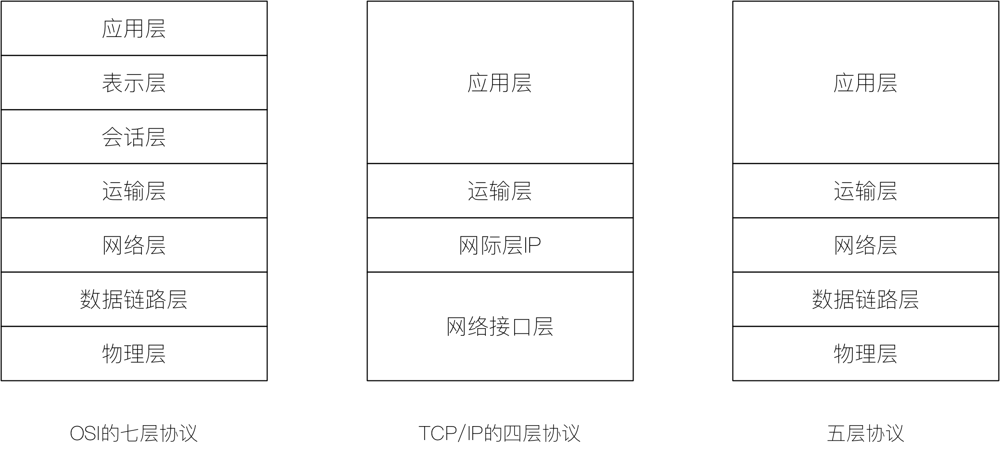

计算机网络复习，不定期更新
目录
体系结构
OSI七层协议
开放系统互连基本参考模型 OSI/RM（Open Systems Interconnection Reference Model），简称OSI。
TCP/IP四层协议
五层协议

每层功能及协议
| 功能 | 常见 | 协议 | |
|---|---|---|---|
| 物理层（比特Bit） | 设备间收获发送比特流； 说明电压、线速和线缆等。 |
中继器、网线、集线器等 | RJ45、CLOCK、IEEE802.3等 |
| 数据链路层（帧Frame） | 将比特组合成字节，进而组合成帧； 用MAC地址访问介质； 错误可以被发现但是不能被纠正。 |
网卡、网桥、二层交换机等。 | PPP、FR、HDLC、VLAN、MAC等。 |
| 网络层（数据包Packet） | 负责数据包从源到宿的传递和网际互连。 | 路由器、多层交换机、防火墙等。 | IP、ICMP、ARP、PARP、OSPF、IPX、RIP、IGRP等。 |
| 运输层 | 可靠或不可靠数据传输； 数据重传前的错误纠正。 |
进程、端口（socket） | TCP、UDP、SPX |
| 会话层 | 保证不同应用程序的数据独立； 建立、管理和终止会话。 |
服务器验证用户登录、断点续传 | NFS、SQL、NetBIOS、RPC |
| 表示层 | 数据表示；加密与解密、数据的压缩与解压缩、图像编码与编码等特殊处理过程 | URL加密、口令加密、图片编解码等 | JPEG、MPEG、ASCII |
| 应用层 | 用户接口 | FTP、DNS、Telnet、SNMP、SMTP、HTTP、WWW、NFS |
物理层
物理层（或称物理层，Physical Layer）是计算机网络OSI模型中最低的一层。物理层规定:为传输数据所需要的物理链路创建、维持、拆除，而提供具有机械的，电子的，功能的和规范的特性。简单的说，物理层确保原始的数据可在各种物理媒体上传输。局域网与广域网皆属第1、2层。
Hub
集线器的英文称为“Hub”。“Hub”是“中心”的意思，集线器的主要功能是对接收到的信号进行再生整形放大，以扩大网络的传输距离，同时把所有节点集中在以它为中心的节点上。它工作于OSI(开放系统互联参考模型)参考模型第一层，即“物理层”。集线器与网卡、网线等传输介质一样，属于局域网中的基础设备，采用CSMA/CD（即带冲突检测的载波监听多路访问技术)介质访问控制机制。集线器每个接口简单的收发比特，收到1就转发1，收到0就转发0，不进行碰撞检测。
集线器（hub）属于纯硬件网络底层设备，基本上不具有类似于交换机的”智能记忆”能力和”学习”能力。它也不具备交换机所具有的MAC地址表，所以它发送数据时都是没有针对性的，而是采用广播方式发送。也就是说当它要向某节点发送数据时，不是直接把数据发送到目的节点，而是把数据包发送到与集线器相连的所有节点。
数据链路层
数据链路层是OSI参考模型中的第二层，介乎于物理层和网络层之间。数据链路层在物理层提供的服务的基础上向网络层提供服务，其最基本的服务是将源自网络层来的数据可靠地传输到相邻节点的目标机网络层。为达到这一目的，数据链路必须具备一系列相应的功能，主要有：如何将数据组合成数据块，在数据链路层中称这种数据块为帧（frame），帧是数据链路层的传送单位；如何控制帧在物理信道上的传输，包括如何处理传输差错，如何调节发送速率以使与接收方相匹配；以及在两个网络实体之间提供数据链路通路的建立、维持和释放的管理。
Ethernet
Ethernet（以太网）属网络低层协议，通常在OSI模型的物理层和数据链路层操作。
以太网是由Xerox公司创建并由Xerox、Intel和DEC公司联合开发的基带局域网规范，是当今现有局域网采用的最通用的通信协议标准。以太网络使用CSMA/CD（载波监听多路访问及冲突检测）技术，并以10M/S的速率运行在多种类型的电缆上。以太网与IEEE802.3系列标准相类似。
包括标准的以太网（10Mbit/s)、快速以太网（100Mbit/s）和10G（10Gbit/s）以太网。它们都符合IEEE802.3。
VLAN
VLAN（Virtual Local Area Network）的中文名为”虚拟局域网”。
虚拟局域网（VLAN）是一组逻辑上的设备和用户，这些设备和用户并不受物理位置的限制，可以根据功能、部门及应用等因素将它们组织起来，相互之间的通信就好像它们在同一个网段中一样，由此得名虚拟局域网。VLAN是一种比较新的技术，工作在OSI参考模型的第2层和第3层，一个VLAN就是一个广播域，VLAN之间的通信是通过第3层的路由器来完成的。与传统的局域网技术相比较，VLAN技术更加灵活，它具有以下优点： 网络设备的移动、添加和修改的管理开销减少；可以控制广播活动；可提高网络的安全性。
在计算机网络中，一个二层网络可以被划分为多个不同的广播域，一个广播域对应了一个特定的用户组，默认情况下这些不同的广播域是相互隔离的。不同的广播域之间想要通信，需要通过一个或多个路由器。这样的一个广播域就称为VLAN。
VLAN的划分
基于端口划分VLAN
基于端口的VLAN的划分是最简单、有效的VLAN划分方法，它按照局域网交换机端口来定义VLAN成员。VLAN从逻辑上把局域网交换机的端口划分开来，从而把终端系统划分为不同的部分，各部分相对独立，在功能上模拟了传统的局域网。基于端口的VLAN又分为在单交换机端口和多交换机端口定义VLAN两种情况。基于MAC地址划分VLAN
基于MAC地址的VLAN是用终端系统的MAC地址定义的VLAN。MAC地址其实就是指网卡的标识符，每一块网卡的MAC地址都是唯一的。这种方法允许工作站移动到网络的其他物理网段，而自动保持原来的VLAN成员资格。在网络规模较小时，该方案可以说是一个好的方法，但随着网络规模的扩大，网络设备、用户的增加，则会在很大程度上加大管理的难度。基于网络层协议划分VLAN
VLAN按网络层协议来划分，可分为IP，IPX，DECnet，AppleTalk，Banyan等VLAN网络。
这种方法的优点是用户的物理位置改变了，不需要重新配置所属的VLAN，而且可以根据协议类型来划分VLAN，这对网络管理者来说很重要。另外，这种方法不需要附加的桢标签来识别VLAN，这样可以减少网络的通信量。缺点是效率低。基于IP组播划分VLAN
IP组实际上是一种VLAN的定义，即认为一个IP组播就是一个VLAN.这种方法有很强的灵活性，容易通过路由扩展。但不是合于局域网，主要是效率不高，而且配置复杂。
IEEE 802.1q（虚拟局域网协议）
IEEE 802.1q协议也就是“Virtual Bridged Local Area Networks”（虚拟桥接局域网，简称“虚拟局域网”）协议，主要规定了VLAN的实现方法。IEEE 802.1q协议为标识带有VLAN成员信息的以太帧建立了一种标准方法。IEEE802.1q标准定义了VLAN网桥操作，从而允许在桥接局域网结构中实现定义、运行以及管理VLAN拓朴结构等操作。
网卡（NIC）
网卡(Network Interface Card，简称NIC)，也称网络适配器，是电脑与局域网相互连接的设备。
网桥（Bridge）
网桥（Bridge）是早期的两端口二层网络设备，用来连接不同网段。网桥的两个端口分别有一条独立的交换信道，不是共享一条背板总线，可隔离冲突域。网桥比集线器（Hub）性能更好，集线器上各端口都是共享同一条背板总线的。后来，网桥被具有更多端口、同时也可隔离冲突域的交换机（Switch）所取代。
网桥（Bridge）像一个聪明的中继器。中继器从一个网络电缆里接收信号， 放大它们，将其送入下一个电缆。相比较而言，网桥对从关卡上传下来的信息更敏锐一些。网桥是一种对帧进行转发的技术，根据MAC分区块，可隔离碰撞。网桥将网络的多个网段在数据链路层连接起来。
网桥也叫桥接器，是连接两个局域网的一种存储/转发设备，它能将一个大的LAN分割为多个网段，或将两个以上的LAN互联为一个逻辑LAN，使LAN上的所有用户都可访问服务器。
扩展局域网最常见的方法是使用网桥。最简单的网桥有两个端口，复杂些的网桥可以有更多的端口。网桥的每个端口与一个网段相连。
交换机（Switch）
交换机（Switch）意为“开关”是一种用于电（光）信号转发的网络设备。它可以为接入交换机的任意两个网络节点提供独享的电信号通路。最常见的交换机是以太网交换机。其他常见的还有电话语音交换机、光纤交换机等。
二层交换机
二层交换技术的发展比较成熟，二层交换机属数据链路层设备，可以识别数据包中的MAC地址信息，根据MAC地址进行转发，并将这些MAC地址与对应的端口记录在自己内部的一个地址表中。
具体的工作流程如下：
- 当交换机从某个端口收到一个数据包，它先读取包头中的源MAC地址，这样它就知道源MAC地址的机器是连在哪个端口上的；
- 再去读取包头中的目的MAC地址，并在地址表中查找相应的端口；
- 如表中有与这目的MAC地址对应的端口，把数据包直接复制到这端口上；
- 如表中找不到相应的端口则把数据包广播到所有端口上，当目的机器对源机器回应时，交换机又可以记录这一目的MAC地址与哪个端口对应，在下次传送数据时就不再需要对所有端口进行广播了。不断的循环这个过程，对于全网的MAC地址信息都可以学习到，二层交换机就是这样建立和维护它自己的地址表。
从二层交换机的工作原理可以推知以下三点：
- 由于交换机对多数端口的数据进行同时交换，这就要求具有很宽的交换总线带宽，如果二层交换机有N个端口，每个端口的带宽是M，交换机总线带宽超过N×M，那么这交换机就可以实现线速交换。
- 学习端口连接的机器的MAC地址，写入地址表，地址表的大小（一般两种表示方式：一为BUFFER RAM，一为MAC表项数值），地址表大小影响交换机的接入容量。
- 还有一个就是二层交换机一般都含有专门用于处理数据包转发的ASIC（Application specific Integrated Circuit，专用集成电路）芯片，因此转发速度可以做到非常快。由于各个厂家采用ASIC不同，直接影响产品性能。
以上三点也是评判二、三层交换机性能优劣的主要技术参数。
三层交换机
使用IP的设备A————————三层交换机————————使用IP的设备B
比如A要给B发送数据，已知目的IP，那么A就用子网掩码取得网络地址，判断目的IP是否与自己在同一网段。如果在同一网段，但不知道转发数据所需的MAC地址，A就发送一个ARP请求，B返回其MAC地址，A用此MAC封装数据包并发送给交换机，交换机起用二层交换模块，查找MAC地址表，将数据包转发到相应的端口。
如果目的IP地址显示不是同一网段的，那么A要实现和B的通讯，在流缓存条目中没有对应MAC地址条目，就将第一个正常数据包发送向一个缺省网关，这个缺省网关一般在操作系统中已经设好，这个缺省网关的IP对应第三层路由模块，所以对于不是同一子网的数据，最先在MAC表中放的是缺省网关的MAC地址（由源主机A完成）；然后就由三层模块接收到此数据包，查询路由表以确定到达B的路由，将构造一个新的帧头，其中以缺省网关的MAC地址为源MAC地址，以主机B的MAC地址为目的MAC地址。通过一定的识别触发机制，确立主机A与B的MAC地址及转发端口的对应关系，并记录进流缓存条目表，以后的A到B的数据（三层交换机要确认是由A到B而不是到C的数据，还要读取帧中的IP地址。），就直接交由二层交换模块完成。这就通常所说的一次路由多次转发。
以上就是三层交换机工作过程的简单概括，可以看出三层交换的特点：
- 由硬件结合实现数据的高速转发。这就不是简单的二层交换机和路由器的叠加，三层路由模块直接叠加在二层交换的高速背板总线上，突破了传统路由器的接口速率限制，速率可达几十Gbit/s。算上背板带宽，这些是三层交换机性能的两个重要参数。
- 简洁的路由软件使路由过程简化。大部分的数据转发，除了必要的路由选择交由路由软件处理，都是由二层模块高速转发，路由软件大多都是经过处理的高效优化软件，并不是简单照搬路由器中的软件。
二层和三层交换机的选择
二层交换机用于小型的局域网络。这个就不用多言了，在小型局域网中，广播包影响不大，二层交换机的快速交换功能、多个接入端口和低廉价格为小型网络用户提供了很完善的解决方案。
三层交换机的优点在于接口类型丰富，支持的三层功能强大，路由能力强大，适合用于大型的网络间的路由，它的优势在于选择最佳路由，负荷分担，链路备份及和其他网络进行路由信息的交换等等路由器所具有功能。
三层交换机的最重要的功能是加快大型局域网络内部的数据的快速转发，加入路由功能也是为这个目的服务的。如果把大型网络按照部门，地域等等因素划分成一个个小局域网，这将导致大量的网际互访，单纯的使用二层交换机不能实现网际互访；如单纯的使用路由器，由于接口数量有限和路由转发速度慢，将限制网络的速度和网络规模，采用具有路由功能的快速转发的三层交换机就成为首选。
一般来说，在内网数据流量大，要求快速转发响应的网络中，如全部由三层交换机来做这个工作，会造成三层交换机负担过重，响应速度受影响，将网间的路由交由路由器去完成，充分发挥不同设备的优点，不失为一种好的组网策略，当然，前提是客户的腰包很鼓，不然就退而求其次，让三层交换机也兼为网际互连。
交换机端口模式
交换机三种端口模式Access、Hybrid和Trunk。
以太网端口有三种链路类型：Access、Hybrid和Trunk。
Access
Access类型的端口只能属于1个VLAN，一般用于连接计算机的端口。
Acess端口收报文:
收到一个报文,判断是否有VLAN信息：如果没有则打上端口的PVID，并进行交换转发,如果有则直接丢弃（缺省）
Acess端口发报文（从交换机内部往外发送）：
将报文的VLAN信息剥离，直接发送出去。
Trunk
Trunk类型的端口可以允许多个VLAN通过，可以接收和发送多个VLAN的报文，一般用于交换机之间连接的端口。
Trunk端口收报文：
收到一个报文，判断是否有VLAN信息。如果有，判断该Trunk端口是否允许该VLAN的数据进入。如果可以则转发，否则丢弃；如果没有VLAN信息则打上端口的PVID，并进行交换转发。
Trunk端口发报文：
比较将要发送报文的VLAN信息和端口的PVID，如果不相等则直接发送。如果两者相等则剥离VLAN信息，再发送。
Hybrid
Hybrid类型的端口可以允许多个VLAN通过，可以接收和发送多个VLAN的报文，可以用于交换机之间连接，也可以用于连接用户的计算机。
hybrid端口收报文：
收到一个报文,判断是否有VLAN信息。如果没有则打上端口的PVID，并进行交换转发；如果有，则判断该hybrid端口是否允许该VLAN的数据进入。如果可以则转发，否则丢弃（此时端口上的untag配置是不用考虑的，untag配置只对发送报文时起作用）。
Hybrid端口发报文：
- 判断该VLAN在本端口的属性（disp interface 即可看到该端口对哪些VLAN是untag，哪些VLAN是tag）
- 如果是untag则剥离VLAN信息，再发送，如果是tag则直接发送
转发信息库（FIB）
FIB（Forward Information dataBase）转发信息库，从概念上讲类似于路由表或信息库。它维护着一个IP路由表中包含的转发信息的镜象。当网络中路由或拓朴结构发生了变化时，IP路由表就被更新，而这些变化也反映在FIB中。FIB基于IP路由表中信息，维护着下一网络段的地址信息。
MAC地址
MAC（Medium/Media Access Control）地址，用来表示互联网上每一个站点的标识符，采用十六进制数表示，共六个字节（48位）。其中，前三个字节是由IEEE的注册管理机构RA负责给不同厂家分配的代码(高位24位），也称为“编制上唯一的标识符”（Organizationally Unique Identifier），后三个字节(低位24位)由各厂家自行指派给生产的适配器接口，称为扩展标识符（唯一性）。一个地址块可以生成2^24个不同的地址。MAC地址实际上就是适配器地址或适配器标识符EUI-48。
MAC地址表
交换机之所以能够直接对目的节点发送数据包，而不是像集线器一样以广播方式对所有节点发送数据包，最关键的技术就是交换机可以识别连在网络上的节点的网卡MAC地址，并把它们放到一个叫做MAC地址表的地方。这个MAC地址表存放于交换机的缓存中，并记住这些地址，这样一来当需要向目的地址发送数据时，交换机就可在MAC地址表中查找这个MAC地址的节点位置，然后直接向这个位置的节点发送。所谓MAC地址数量是指交换机的MAC地址表中可以最多存储的MAC地址数量，存储的MAC地址数量越多，那么数据转发的速度和效率也就就越高。
假设主机A向主机C发送一个数据帧（每一个数据帧中都包含有源MAC地址和目的MAC地址），当该数据帧从E0端口进入交换机后，交换机通过检查数据帧中的源MAC地址字段，将该字段的值（主机A的MAC地址）放入MAC地址表中，并把它与E0端口对应起来，表示E0端口所连接的主机是A。此时，由于在MAC地址表中没有关于目的MAC地址（主机C的MAC地址）的条目。交换机技术将此帧向除了E0端口以外的所有端口转发，从而保证主机C能收到该帧（这种操作叫flooding）。
同理，当交换机收到主机B、C、D的数据后也会把他们的地址学习到，写入地址表中，并将相应的端口和MAC地址对应起来。最终会把所有的主机地址都学习到，构建出完整的地址表。此时，若主机A再向主机C发送一个数据帧，应用交换机技术则根据它的MAC地址表中的地址对应关系，将此数据帧仅从它的E2端口转发出去。从而仅使主机C接收到主机A发送给它的数据帧，不再影响其他端口。那么在主机A和主机C通信的同时其他主机（比如主机B和主机D）之间也可以通信。
当交换机建立起完整的MAC地址表之后，对数据帧的转发是通过查找MAC地址表得到对应的端口，从而将数据帧通过特定的端口发送出去的。但是，对于从一个端口进入的广播数据及在地址表中找不到地址条目的数据，交换机会把该数据帧从除了进入端口之外的所有端口转发出去。从这个角度来说，交换机互连的设备处于同一个广播域内，但它们处于不同的碰撞域内，并且处于不同区域！
提示这里为了解释交换机如何建立MAC地址表，假设A向C发了一个数据帧。实际情况并非如此，并不是主机间必须进行通信交换机才能学习到MAC地址。实际上是当网卡驱动加载之后交换机就学习到了主机的MAC地址。Windows系统启动过程还没完成，交换机技术就学习到了主机的MAC地址。
ff:ff:ff:ff:ff:ff
以主机A（192.168.1.5）向主机B（192.168.1.1）发送数据为例。当发送数据时，主机A会在自己的ARP缓存表中寻找是否有目标IP地址。如果找到了，也就知道了目标MAC地址，直接把目标MAC地址写入帧里面发送就可以了；如果在ARP缓存表中没有找到相对应的IP地址，主机A就会在网络上发送一个广播，目标MAC地址是“ff:ff:ff:ff:ff:ff”，这表示向同一网段内的所有主机发出这样的询问：“192.168.1.1的MAC地址是什么？”网络上其他主机并不响应ARP询问，只有主机B接收到这个帧时，才向主机A做出这样的回应：“192.168.1.1的MAC地址是00-aa-00-62-c6-09”。这样，主机A就知道了主机B的MAC地址，它就可以向主机B发送信息了。同时它还更新了自己的ARP缓存表，下次再向主机B发送信息时，直接从ARP缓存表里查找就可以了。
网络层
网络层是OSI参考模型中的第三层，介于传输层和数据链路层之间，它在数据链路层提供的两个相邻端点之间的数据帧的传送功能上，进一步管理网络中的数据通信，将数据设法从源端经过若干个中间节点传送到目的端，从而向运输层提供最基本的端到端的数据传送服务。主要内容有：虚电路分组交换和数据报分组交换、路由选择算法、阻塞控制方法、X.25协议、综合业务数据网（ISDN）、异步传输模式（ATM）及网际互连原理与实现。
网络层的目的是实现两个端系统之间的数据透明传送，具体功能包括寻址和路由选择、连接的建立、保持和终止等。它提供的服务使传输层不需要了解网络中的数据传输和交换技术。如果您想用尽量少的词来记住网络层，那就是“路径选择、路由及逻辑寻址”。
Router
路由器（Router），是连接因特网中各局域网、广域网的设备，它会根据信道的情况自动选择和设定路由，以最佳路径，按前后顺序发送信号。
路由器（Router）又称网关设备（Gateway）是用于连接多个逻辑上分开的网络，所谓逻辑网络是代表一个单独的网络或者一个子网。当数据从一个子网传输到另一个子网时，可通过路由器的路由功能来完成。因此，路由器具有判断网络地址和选择IP路径的功能，它能在多网络互联环境中，建立灵活的连接，可用完全不同的数据分组和介质访问方法连接各种子网，路由器只接受源站或其他路由器的信息，属网络层的一种互联设备。
工作原理
- 工作站A将工作站B的地址12.0.0.5连同数据信息以数据包的形式发送给路由器1。
- 路由器1收到工作站A的数据包后，先从包头中取出地址12.0.0.5，并根据路径表计算出发往工作站B的最佳路径：R1->R2->R5->B；并将数据包发往路由器2。
- 路由器2重复路由器1的工作，并将数据包转发给路由器5。
- 路由器5同样取出目的地址，发现12.0.0.5就在该路由器所连接的网段上，于是将该数据包直接交给工作站B。
- 工作站B收到工作站A的数据包，一次通信过程宣告结束。
路由表
路由表是指路由器中保存着的各种传输路径的相关数据，供路由选择时使用。路由表中保存着子网的标志信息、网上路由器的个数和下一个路由器的名字等内容。
字段说明
| 字段名 | 说明 |
|---|---|
| Dest | 目的逻辑网络或子网地址。 最长匹配192.168.161.0 > 192.168.0.0 > 0.0.0.0，0可匹配任意数值 |
| Mask | 目的逻辑网络或子网掩码 |
| Gw | 与之相邻的路由器的端口地址，即该路由的下一跳IP地址。 0.0.0.0表示无网关，即与本机IP同一网段，不需要经过网关（同一个局域网内2台主机通信不需要经过网关） |
| Interface | 学习到该路由条目的接口，也是数据包离开路由器去往目的地将经过的接口。 |
| Owner | 路由来源，表示该路由信息是怎样学习到的。 |
| Pri | 路由的管理距离，即优先级，决定了来自不同路由来源的路由信息的优先权。 |
| Metric | 度量值，表示每条可能路由的代价，度量值最小的路由就是最佳路由。 Metric只有当同一种动态路由协议，发现多条到达同一目的网段路由的时候，才有比较性。不同路由协议的Metric不具有可比性。 |
直连路由
直连路由：路由器接口所连接的子网的路由方式称为直连路由；非直连路由：通过路由协议从别的路由器学到的路由称为非直连路由；分为静态路由和动态路由； 直连路由是由链路层协议发现的，一般指去往路由器的接口地址所在网段的路径，该路径信息不需要网络管理员维护，也不需要路由器通过某种算法进行计算获得，只要该接口处于活动状态(Active)，路由器就会把通向该网段的路由信息填写到路由表中去，直连路由无法使路由器获取与其不直接相连的路由信息。
静态路由
静态路由是指由用户或网络管理员手工配置的路由信息。当网络的拓扑结构或链路的状态发生变化时，网络管理员需要手工去修改路由表中相关的静态路由信息。静态路由信息在缺省情况下是私有的，不会传递给其他的路由器。当然，网管员也可以通过对路由器进行设置使之成为共享的。静态路由一般适用于比较简单的网络环境，在这样的环境中，网络管理员易于清楚地了解网络的拓扑结构，便于设置正确的路由信息。
动态路由
动态路由是与静态路由相对的一个概念，指路由器能够根据路由器之间的交换的特定路由信息自动地建立自己的路由表，并且能够根据链路和节点的变化适时地进行自动调整。当网络中节点或节点间的链路发生故障，或存在其它可用路由时，动态路由可以自行选择最佳的可用路由并继续转发报文。
ARP
地址解析协议，即ARP（Address Resolution Protocol），是根据IP地址获取物理地址的一个TCP/IP协议。主机发送信息时将包含目标IP地址的ARP请求广播到网络上的所有主机，并接收返回消息，以此确定目标的物理地址；收到返回消息后将该IP地址和物理地址存入本机ARP缓存中并保留一定时间，下次请求时直接查询ARP缓存以节约资源。地址解析协议是建立在网络中各个主机互相信任的基础上的，网络上的主机可以自主发送ARP应答消息，其他主机收到应答报文时不会检测该报文的真实性就会将其记入本机ARP缓存；由此攻击者就可以向某一主机发送伪ARP应答报文，使其发送的信息无法到达预期的主机或到达错误的主机，这就构成了一个ARP欺骗。ARP命令可用于查询本机ARP缓存中IP地址和MAC地址的对应关系、添加或删除静态对应关系等。相关协议有RARP、代理ARP。NDP用于在IPv6中代替地址解析协议。
OSI模型把网络工作分为七层，IP地址在OSI模型的第三层，MAC地址在第二层，彼此不直接打交道。在通过以太网发送IP数据包时，需要先封装第三层（32位IP地址）、第二层（48位MAC地址）的报头，但由于发送时只知道目标IP地址，不知道其MAC地址，又不能跨第二、三层，所以需要使用地址解析协议。使用地址解析协议，可根据网络层IP数据包包头中的IP地址信息解析出目标硬件地址（MAC地址）信息，以保证通信的顺利进行。
工作过程
主机A的IP地址为192.168.1.1，MAC地址为0A-11-22-33-44-01；
主机B的IP地址为192.168.1.2，MAC地址为0A-11-22-33-44-02；
当主机A要与主机B通信时，地址解析协议可以将主机B的IP地址（192.168.1.2）解析成主机B的MAC地址，以下为工作流程：
第1步：根据主机A上的路由表内容，IP确定用于访问主机B的转发IP地址是192.168.1.2。然后A主机在自己的本地ARP缓存中检查主机B的匹配MAC地址。
第2步：如果主机A在ARP缓存中没有找到映射，它将询问192.168.1.2的硬件地址，从而将ARP请求帧广播到本地网络上的所有主机。源主机A的IP地址和MAC地址都包括在ARP请求中。本地网络上的每台主机都接收到ARP请求并且检查是否与自己的IP地址匹配。如果主机发现请求的IP地址与自己的IP地址不匹配，它将丢弃ARP请求。
第3步：主机B确定ARP请求中的IP地址与自己的IP地址匹配，则将主机A的IP地址和MAC地址映射添加到本地ARP缓存中。
第4步：主机B将包含其MAC地址的ARP回复消息直接发送回主机A。
第5步：当主机A收到从主机B发来的ARP回复消息时，会用主机B的IP和MAC地址映射更新ARP缓存。本机缓存是有生存期的，生存期结束后，将再次重复上面的过程。主机B的MAC地址一旦确定，主机A就能向主机B发送IP通信了。
IP
IP（Internet Protocol）网络之间互连的协议，中文缩写为“网协”。
IP是为计算机网络相互连接进行通信而设计的协议。在因特网中，它是能使连接到网上的所有计算机网络实现相互通信的一套规则，规定了计算机在因特网上进行通信时应当遵守的规则。任何厂家生产的计算机系统，只要遵守IP协议就可以与因特网互连互通。
IP地址
IP地址（Internet Protocol Address）是指互联网协议地址（网际协议地址）。IP地址是IP协议提供的一种统一的地址格式，它为互联网上的每一个网络和每一台主机分配一个逻辑地址，以此来屏蔽物理地址的差异。
IP地址是一个32位的二进制数，通常被分割为4个“8位二进制数”（也就是4个字节）。IP地址通常用“点分十进制”表示成（a.b.c.d）的形式，其中，a,b,c,d都是0~255之间的十进制整数。例：点分十进IP地址（100.4.5.6），实际上是32位二进制数（01100100.00000100.00000101.00000110）。常见的IP地址，分为IPv4与IPv6两大类。
IP地址类型
公有地址
公有地址（Public address）由Inter NIC（Internet Network Information Center因特网信息中心）负责。这些IP地址分配给注册并向Inter NIC提出申请的组织机构。通过它直接访问因特网。
私有地址
私有地址（Private address）属于非注册地址，专门为组织机构内部使用。
以下列出留用的内部私有地址
A类 10.0.0.0–10.255.255.255
B类 172.16.0.0–172.31.255.255
C类 192.168.0.0–192.168.255.255
IP地址分类
最初设计互联网络时，为了便于寻址以及层次化构造网络，每个IP地址包括两个标识码（ID），即网络ID和主机ID。同一个物理网络上的所有主机都使用同一个网络ID，网络上的一个主机（包括网络上工作站，服务器和路由器等）有一个主机ID与其对应。
IP地址编址方案将IP地址空间划分为A、B、C、D、E五类，其中A、B、C是基本类，D、E类作为多播和保留使用。
| 类别 | 最大网络数 | IP地址范围 | 最大主机数 | 私有IP地址范围 | 子网掩码 |
|---|---|---|---|---|---|
| A | 126（2^7-2） | 0.0.0.0~127.255.255.255 | 16777214（2^24-2） | 10.0.0.0~10.255.255.255 | 255.0.0.0 |
| B | 16384（2^14） | 128.0.0.0~191.255.255.255 | 65534（2^16-2） | 172.16.0.0~172.31.255.255 | 255.255.0.0 |
| C | 2097152（2^21） | 192.0.0.0~223.255.255.255 | 254（2^8-2） | 192.168.0.0~192.168.255.255 | 255.255.255.0 |
RFC 1918
RFC（Request For Comments），是一系列以编号排定的文件。
RFC 1918私有网络地址分配 (Address Allocation for Private Internets)。
因特网域名分配组织IANA组织（Internet Assigned Numbers Authority）保留了以下三个IP地址块用于私有网络。
10.0.0.0 - 10.255.255.255 (10/8比特前缀)
172.16.0.0 - 172.31.255.255 (172.16/12比特前缀)
192.168.0.0 - 192.168.255.255 (192.168/16比特前缀)
把第一块称为“24-比特块”，第二块称为“20-比特块”，第三块称为“16-比特块”注意（在前面的CIDR 记号中），第一块地址就是一个A类网络号，第二块地址是16个连续的B类网络号集合，第三块地址是256个连续的C类网络号集合。
Subnet
为了确定网络区域，分开主机和路由器的每个接口，从而产生了若干个分离的网络岛，接口端连接了这些独立网络的端点。这些独立的网络岛叫做子网(subnet)。
Subnet Mask
子网掩码(subnet mask)又叫网络掩码、地址掩码、子网络遮罩，它是一种用来指明一个IP地址的哪些位标识的是主机所在的子网，以及哪些位标识的是主机的位掩码。子网掩码不能单独存在，它必须结合IP地址一起使用。子网掩码只有一个作用，就是将某个IP地址划分成网络地址和主机地址两部分。
它是一个32位地址，用于屏蔽IP地址的一部分以区别网络标识和主机标识，并说明该IP地址是在局域网上，还是在远程网上。
它屏蔽一个IP地址的网络部分的“全1”比特模式。对于A类地址来说，默认的子网掩码是255.0.0.0；对于B类地址来说默认的子网掩码是255.255.0.0；对于C类地址来说默认的子网掩码是255.255.255.0。
运输层
OSI七层模型中的物理层、数据链路层和网络层，它们是面向网络通信的低三层协议。运输层负责端到端的通信，既是七层模型中负责数据通信的最高层，又是面向网络通信的低三层和面向信息处理的最高三层之间的中间层。运输层位于网络层之上、会话层之下，它利用网络层子系统提供给它的服务去开发本层的功能，并实现本层对会话层的服务。解决的是计算机程序到计算机程序之间的通信问题。
TCP
TCP（Transmission Control Protocol 传输控制协议）是一种面向连接的、可靠的、基于字节流的传输层通信协议，由IETF的RFC 793定义。
当应用层向TCP层发送用于网间传输的、用8位字节表示的数据流，TCP则把数据流分割成适当长度的报文段，最大传输段大小（MSS）通常受该计算机连接的网络的数据链路层的最大传送单元（MTU）限制。之后TCP把数据包传给IP层，由它来通过网络将包传送给接收端实体的TCP层。
TCP为了保证报文传输的可靠，就给每个包一个序号，同时序号也保证了传送到接收端实体的包的按序接收。然后接收端实体对已成功收到的字节发回一个相应的确认(ACK)；如果发送端实体在合理的往返时延(RTT)内未收到确认，那么对应的数据（假设丢失了）将会被重传。
- 在数据正确性与合法性上，TCP用一个校验和函数来检验数据是否有错误，在发送和接收时都要计算校验和；同时可以使用md5认证对数据进行加密。
- 在保证可靠性上，采用超时重传和捎带确认机制。
- 在流量控制上，采用滑动窗口协议，协议中规定，对于窗口内未经确认的分组需要重传。
- 在拥塞控制上，采用广受好评的TCP拥塞控制算法（也称AIMD算法）。该算法主要包括三个主要部分：1）加性增、乘性减；2）慢启动；3）对超时事件做出反应。
UDP
UDP（User Datagram Protocol）用户数据报协议，提供面向事务的简单不可靠信息传送服务。IETF RFC 768是UDP的正式规范。UDP在IP报文的协议号是17。
它主要用于不要求分组顺序到达的传输中，分组传输顺序的检查与排序由应用层完成，提供面向事务的简单不可靠信息传送服务。UDP协议基本上是IP协议与上层协议的接口。UDP协议适用端口分别运行在同一台设备上的多个应用程序。
UDP提供了无连接通信，且不对传送数据包进行可靠性保证，适合于一次传输少量数据，UDP传输的可靠性由应用层负责。
UDP报文没有可靠性保证、顺序保证和流量控制字段等，可靠性较差。但是正因为UDP协议的控制选项较少，在数据传输过程中延迟小、数据传输效率高，适合对可靠性要求不高的应用程序，或者可以保障可靠性的应用程序，如DNS、TFTP、SNMP等。
ICMP
ICMP是（Internet Control Message Protocol）Internet控制报文协议。它是TCP/IP协议族的一个子协议，用于在IP主机、路由器之间传递控制消息。控制消息是指网络通不通、主机是否可达、路由是否可用等网络本身的消息。这些控制消息虽然并不传输用户数据，但是对于用户数据的传递起着重要的作用。
应用层
应用层（Application layer）是七层OSI模型的第七层。应用层直接和应用程序接口并提供常见的网络应用服务。应用层也向表示层发出请求。
应用层是开放系统的最高层，是直接为应用进程提供服务的。其作用是在实现多个系统应用进程相互通信的同时，完成一系列业务处理所需的服务。其服务元素分为两类：公共应用服务元素CASE和特定应用服务元素SASE。
DHCP
DHCP（Dynamic Host Configuration Protocol，动态主机配置协议）通常被应用在大型的局域网络环境中，主要作用是集中的管理、分配IP地址，使网络环境中的主机动态的获得IP地址、Gateway地址、DNS服务器地址等信息，并能够提升地址的使用率。
DHCP协议采用客户端/服务器模型，主机地址的动态分配任务由网络主机驱动。当DHCP服务器接收到来自网络主机申请地址的信息时，才会向网络主机发送相关的地址配置等信息，以实现网络主机地址信息的动态配置。DHCP具有以下功能：
- 保证任何IP地址在同一时刻只能由一台DHCP客户机所使用。
- DHCP应当可以给用户分配永久固定的IP地址。
- DHCP应当可以同用其他方法获得IP地址的主机共存（如手工配置IP地址的主机）。
- DHCP服务器应当向现有的BOOTP客户端提供服务。
DHCP有三种机制分配IP地址：
- 自动分配方式（Automatic Allocation），DHCP服务器为主机指定一个永久性的IP地址，一旦DHCP客户端第一次成功从DHCP服务器端租用到IP地址后，就可以永久性的使用该地址。
- 动态分配方式（Dynamic Allocation），DHCP服务器给主机指定一个具有时间限制的IP地址，时间到期或主机明确表示放弃该地址时，该地址可以被其他主机使用。
- 手工分配方式（Manual Allocation），客户端的IP地址是由网络管理员指定的，DHCP服务器只是将指定的IP地址告诉客户端主机。
三种地址分配方式中，只有动态分配可以重复使用客户端不再需要的地址。
DNS
DNS（Domain Name System，域名系统），万维网上作为域名和IP地址相互映射的一个分布式数据库，能够使用户更方便的访问互联网，而不用去记住能够被机器直接读取的IP数串。通过域名，最终得到该域名对应的IP地址的过程叫做域名解析（或主机名解析）。DNS协议运行在UDP协议之上，使用端口号53。在RFC文档中RFC 2181对DNS有规范说明，RFC 2136对DNS的动态更新进行说明，RFC 2308对DNS查询的反向缓存进行说明。
DNS域名解析过程
- 输入网址https://music.163.com
- 电脑发出一个DNS请求到本地DNS服务器（本地DNS服务器一般由网络接入商提供，中国移动、电信等）
- 本地服务器查询缓存记录，有则直接返回结果。没有则向DNS根服务器进行查询。（根服务器没有记录具体的域名和IP地址对应的关系）
- 告诉本地DNS服务器域服务器地址（此处为.com）
- 本地服务器向域服务器发出请求
- 域服务器告诉本地DNS服务器域名的解析服务器的地址
- 本地服务器向解析服务器发出请求
- 收到域名和IP地址的对应关系
- 本地服务器把IP地址发给用户电脑，并保存对应关系，以备下次查询
其他
通信方式
单播(unicast：point to point)，点到点的通信方式。
多播(multicast：point tO multipoint)，点到多点的通信方式。
汇播(concast：multipoint to point)，多点到一点的通信方式。
群播(multipoint tO multipoint)，多点到多点的通信方式，多播的一种推广。
广播(broadcast：point to all point)，点到所有节点的通信方式。
组播()，是指在IP网络中将数据包以尽力传送的形式发送到某个确定的节点集合（即组播组），其基本思想是：源主机（即组播源）只发送一份数据，其目的地址为组播组地址；组播组中的所有接收者都可收到同样的数据拷贝，并且只有组播组内的主机可以接收该数据，而其它主机则不能收到。
Firewall
防火墙（Firewall），也称防护墙，是由Check Point创立者Gil Shwed于1993年发明并引入国际互联网（US5606668（A）1993-12-15）。它是一种位于内部网络与外部网络之间的网络安全系统。一项信息安全的防护系统，依照特定的规则，允许或是限制传输的数据通过。
网络层防火墙
网络层防火墙可视为一种IP封包过滤器，运作在底层的TCP/IP协议堆栈上。我们可以以枚举的方式，只允许符合特定规则的封包通过，其余的一概禁止穿越防火墙（病毒除外，防火墙不能防止病毒侵入）。这些规则通常可以经由管理员定义或修改，不过某些防火墙设备可能只能套用内置的规则。
我们也能以另一种较宽松的角度来制定防火墙规则，只要封包不符合任何一项“否定规则”就予以放行。操作系统及网络设备大多已内置防火墙功能。
较新的防火墙能利用封包的多样属性来进行过滤，例如：来源IP地址、来源端口号、目的IP地址或端口号、服务类型（如HTTP或是FTP）。也能经由通信协议、TTL值、来源的网域名称或网段等属性来进行过滤。
应用层防火墙
应用层防火墙是在TCP/IP堆栈的“应用层”上运作，您使用浏览器时所产生的数据流或是使用FTP时的数据流都是属于这一层。应用层防火墙可以拦截进出某应用程序的所有封包，并且封锁其他的封包（通常是直接将封包丢弃）。理论上，这一类的防火墙可以完全阻绝外部的数据流进到受保护的机器里。
防火墙借由监测所有的封包并找出不符规则的内容，可以防范电脑蠕虫或是木马程序的快速蔓延。不过就实现而言，这个方法既烦且杂（软件有千千百百种啊），所以大部分的防火墙都不会考虑以这种方法设计。
根据侧重不同，可分为：包过滤型防火墙、应用层网关型防火墙、服务器型防火墙。
Load Balance
负载均衡（Load Balance），其意思就是分摊到多个操作单元上进行执行，例如Web服务器、FTP服务器、企业关键应用服务器和其它关键任务服务器等，从而共同完成工作任务。
当一台服务器的性能达到极限时，我们可以使用服务器集群来提高网站的整体性能。那么，在服务器集群中，需要有一台服务器充当调度者的角色，用户的所有请求都会首先由它接收，调度者再根据每台服务器的负载情况将请求分配给某一台后端服务器去处理。那么在这个过程中，调度者如何合理分配任务，保证所有后端服务器都将性能充分发挥，从而保持服务器集群的整体性能最优，这就是负载均衡问题。
混杂模式
混杂模式（Promiscuous Mode）是指一台机器能够接收所有经过它的数据流，而不论其目的地址是否是他。
混杂模式就是接收所有经过网卡的数据包，包括不是发给本机的包。默认情况下网卡只把发给本机的包（包括广播包）传递给上层程序，其它的包一律丢弃。简单的讲，混杂模式就是指网卡能接受所有通过它的数据流，不管是什么格式，什么地址的。事实上，计算机收到数据包后，由网络层进行判断，确定是递交上层（传输层），还是丢弃，还是递交下层（数据链路层、MAC子层）转发。
非混杂模式（标准模式）
网卡只会接受我们该接收的包而不会接受其他的地址的网络数据包。